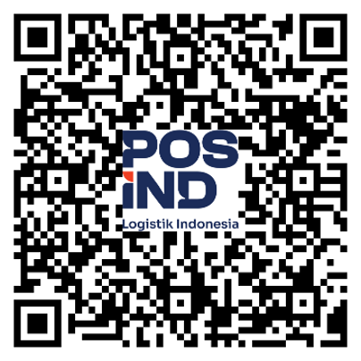

Kiriman Kargo
Pengiriman barang dalam jumlah besar dengan penanganan yang aman dan solusi biaya yang kompetitif.
Tanyakan layanan →Solusi pengiriman untuk kargo, kendaraan bermotor, dan barang pindahan ke berbagai wilayah Indonesia dengan pelayanan profesional.
Pilih layanan yang paling sesuai. PIC akan membantu memberikan informasi alur, persiapan, dan proses pengiriman.
Pengiriman barang dalam jumlah besar dengan penanganan yang aman dan solusi biaya yang kompetitif.
Tanyakan layanan →Kirim motor kesayangan Anda ke berbagai kota dengan proses yang jelas, aman, dan lebih praktis.
Tanyakan layanan →Solusi pindahan rumah, kantor, atau kos agar barang sampai tujuan dengan lebih rapi dan terorganisasi.
Tanyakan layanan →Dapatkan pendampingan langsung dari PIC untuk memilih layanan, menyiapkan kebutuhan pengiriman, dan memperoleh informasi yang dibutuhkan.
Hubungi PIC sekarang →Pilihan solusi untuk kargo, kendaraan bermotor, dan barang pindahan.
Konsultasi langsung untuk membantu menjelaskan kebutuhan dan proses pengiriman.
Didukung pengalaman dan jaringan layanan Pos Indonesia di berbagai wilayah.
Mulai dari konsultasi hingga pengiriman, semuanya dibuat lebih jelas dan mudah dipahami.
Sampaikan jenis barang, asal, tujuan, dan kebutuhan pengiriman.
PIC membantu mengarahkan pilihan layanan yang paling sesuai.
Lengkapi informasi dan persiapkan barang sesuai arahan.
Kiriman diproses menuju tujuan sesuai layanan yang dipilih.
Konsultasikan kebutuhan pengiriman Anda secara langsung melalui telepon atau WhatsApp.

Arahkan kamera ponsel ke QR code di atas.